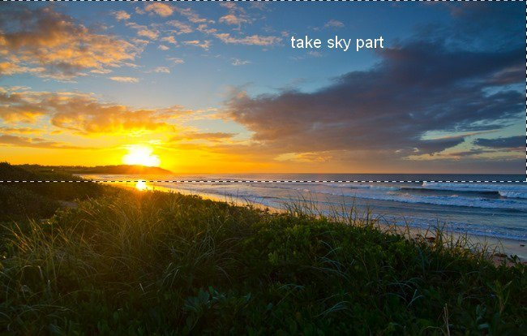
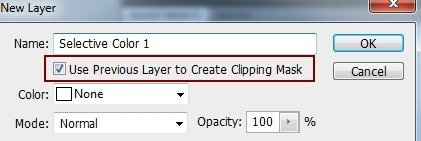

Create a new document with size 1300×800 px and fill it with white (or any color you like). Open sky stock. Use Retangular Marquee Tool to make a selection on sky part and use Move Tool (V) to drag it into our white canvas, place it at the top:
I use an adjustment layer with Clipping Mask to make colors of the sky richer and more vibrant. On sky layer, go to Layer-New Adjustment Layer-Selective Color:
